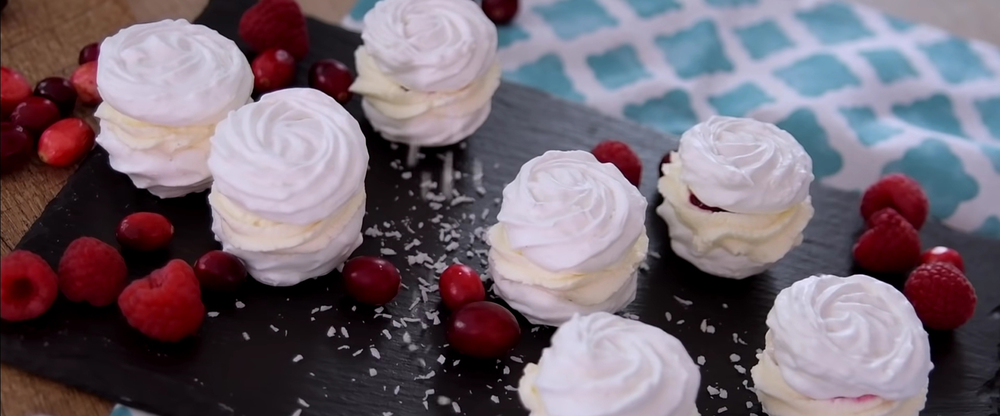

приготовление:
-
Разогреть духовку до 95–100 °C. Застелить противень пергаментом.
-
Взбить миксером 90 г яичных белков до появления пены. Постепенно всыпать 180 г сахара и взбивать 5–10 минут до устойчивых пиков. Аккуратно вмешать лопаткой 50 г несладкой кокосовой стружки.
-
Выложить меренги на противень ложкой или отсадить из кондитерского мешка. Подсушивать в духовке 60–90 минут (у меня ушло ≈ 2 часа). Готовые меренги должны подсохнуть сверху и снизу и легко отходить от пергамента. Дать им полностью остыть.
-
Для крема взбить 250 г сливок 33% с 20 г сахарной пудры и 1 ч. л. ванильного экстракта до мягких пиков.
-
Соединить меренги попарно кремом. По желанию положить между половинками свежую ягоду, например малину: её кислинка хорошо сочетается со сладостью меренги. Убрать в холодильник минимум на 2 часа.